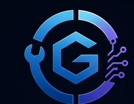

Bookings & Appointments
Availability, appointment requests, reminders and follow-up. Prenotazioni, agenda e reminder per ridurre attrito, chiamate perse e no-show.

GOSSMERESoftware & Digital Systems for Business
Websites, applications, automation, analytics and custom digital systems built to convert attention into action and operations into measurable processes.
Siti, applicazioni e sistemi digitali progettati per attività e imprese: più richieste, prenotazioni, preventivi, automazione e controllo operativo.
Built for outcomes. Designed for continuity.
We combine software, data, automation and product thinking into one coherent business system.
Uniamo software, dati, automazioni e progettazione di prodotto in un unico sistema coerente per l'impresa.
Solutions / Soluzioni
Partiamo dal risultato. La tecnologia viene dopo.
Availability, appointment requests, reminders and follow-up. Prenotazioni, agenda e reminder per ridurre attrito, chiamate perse e no-show.
Structured requests, photos, documents and qualification. Preventivi più completi, richieste ordinate e follow-up tracciabile.
Trials, registrations, renewals and light CRM workflows. Prove, iscrizioni, rinnovi, scadenze e gestione cliente.
Dashboards and decision support. Capire quali servizi rendono, quali canali convertono e dove si perdono opportunità.
Reminders, notifications, integrations and repetitive workflows. Meno lavoro manuale, più continuità operativa.
Purpose-built solutions when generic software is not enough. Sistemi su misura quando il processo reale richiede qualcosa di specifico.
What we build / Cosa realizziamo
Calabria / Local Business
Soluzioni digitali con standard professionali internazionali, applicate alle esigenze concrete delle attività locali.
We are expanding selected local-business collaborations across the Riviera dei Cedri and Calabria, with an initial focus on businesses where digital improvements can produce a clear operational or commercial return.
Turismo, hospitality, professionisti, automotive, wellness, fitness, retail e servizi: analizziamo il percorso digitale reale e interveniamo dove esistono attriti, richieste perse, processi manuali o opportunità non misurate.
Gossmere Products
Product line.
Product line.
Product line.
Commercial naming under evaluation.
Contact / Contatti
We can start from an audit, a specific workflow or a business objective. Possiamo partire da un audit, da un singolo processo o da un obiettivo commerciale concreto.